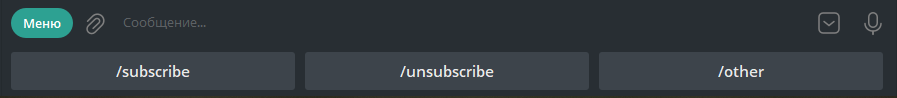
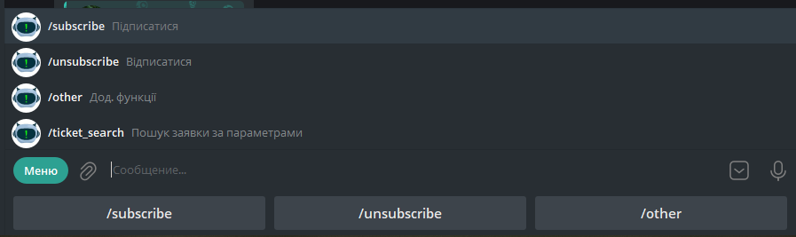

Основне меню
Меню представлено в декількох екземплярах
У вигляді кнопок замість клавіатури
 У вигляді меню

Функціонал меню
/subscribe- Функціонал додавання додаткових облікових записів для отримання сповіщень по ним/unsubscribe- Функціонал відключення додаткових облікових записів для відключення сповіщень по ним/ticket_search- Функціонал пошуку заявки
/subscribe
Після натискання на цю кнопку, надається вибір
Увімкнути раніше відключеного користувача
Додати нового (запускається механізм авторизації)
/unsubscribe
Після натискання на цю кнопку надається вибір із раніше підключених користувачів для відключення сповіщень.
29 августа 2025